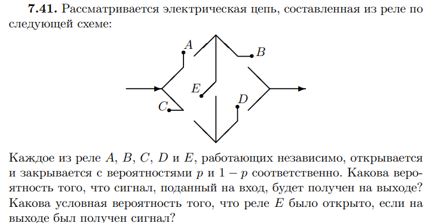

Практика 1. Повторение дискретной ТВ: события и условные вероятности¶
Цель. События, классическая вероятность, независимость и формула Байеса; зарядить ружьё на базовую частоту.
Ход пары
- Ружьё: профессии Стива
- Элементарные исходы
- Суммы и произведения
- Комбинаторика
- Условная вероятность
- Независимость
- Полная вероятность и Байес
Чеховское ружьё¶
На доске в начале пары — четыре профессии. Зачитать описание, спросить, какая профессия наиболее вероятна. Ответ не раскрывать: выстрел в практическом примере про Стива.
- Библиотекарь
- Фармацевт
- Продавец
- Пожарный
Некто описывает своего соседа: «Стив очень застенчив и нелюдим, всегда готов помочь, но мало интересуется окружающими и действительностью. Он тихий и аккуратный, любит порядок и систематичность и очень внимателен к деталям». Кем вероятнее работает Стив?
Элементарные исходы¶
Теория¶
На доску
Дискретным вероятностным пространством (англ. discrete probability space) называется пара из некоторого (не более чем счётного) множества \(\Omega\) и функции \(p: \Omega \rightarrow \mathbb{R}_+\) (\(\Omega\) — множество элементарных исходов, \(\omega \in \Omega\) — элементарный исход), такая, что \(\sum_{\omega \in \Omega} p(\omega) = 1\).
Пусть \(\Omega\) — непустое множество элементарных исходов. Класс \(\mathcal{F}\) подмножеств образует \(\sigma\)-алгебру:
- \(\Omega \in \mathcal{F}\);
- если \(A \in \mathcal{F}\), то \(\overline{A} \in \mathcal{F}\);
- если \(A_1, A_2, \dots \in \mathcal{F}\), то \(\bigcup_{i=1}^{\infty} A_i \in \mathcal{F}\).
Элементы \(\mathcal{F}\) — события. \(\Omega\) — достоверное, \(\varnothing\) — невозможное. \(A\) и \(B\) несовместны, если \(AB = \varnothing\).
Функция \(P : \mathcal{F} \rightarrow [0, 1]\) — вероятность, если \(P(\Omega) = 1\) и
для попарно несовместных \(A_i\). Тройка \((\Omega, \mathcal{F}, P)\) — вероятностное пространство.
У текущего потока нет теории мер перед теорвером. Поэтому, следует
Четыре отличия общего определения от дискретного: - Снято ограничение «не более чем счётно» на \(\Omega\) (Для работы на непрерывных мн-вах). - Вероятность задаётся не на элементарных исходах, а на событиях (Для работы на непрерывных мн-вах).. - Введены сложные правила, какие множества считаются событиями (Т.К. есть неизмеримые мн-ва). - Счётную аддитивность приходится требовать явно: в дискретном случае она следовала из того, что сумма по всем исходам равна 1.
На доску
Классическое определение: \(\Omega = \{\omega_1, \dots, \omega_n\}\), \(\mathcal{F}\) — все подмножества,
Исходы равновозможны.
Суммы и перемножения событий¶
Теория¶
На доску
Сложение несовместных. Вероятность появления одного из двух несовместных событий, безразлично какого:
Следствие для попарно несовместных:
На доску
Сложение совместных. Вероятность хотя бы одного из двух совместных:
Для трёх:
На доску
Умножение. Вероятность совместного появления двух событий:
Для независимых \(P(AB) = P(A)P(B)\).
Для нескольких:
Если независимы в совокупности — просто произведение безусловных.
Задача 1. Два орудия¶
Вероятность одного попадания в цель при одном залпе из двух орудий равна 0,38. Найти вероятность поражения цели при одном выстреле первым из орудий, если для второго эта вероятность равна 0,8.
Решение¶
Открыть
Пусть \(A\) — попадание первого орудия, \(B\) — второго, \(P(B) = 0{,}8\). Орудия независимы, «одно попадание при залпе» — ровно одно из двух:
Отсюда \(0{,}2\,P(A) + 0{,}8 - 0{,}8\,P(A) = 0{,}38\), то есть \(0{,}6\,P(A) = 0{,}42\), значит \(P(A) = 0{,}7\).
Комбинаторика¶
Теория¶
Задачи на комбинаторику обычно решаются через классическую вероятность: нашли число благоприятных исходов, нашли число всех, поделили.
На доску
| Формула | Что считает |
|---|---|
| \(n!\) | перестановки \(n\) различных |
| \(A_n^k = n!/(n-k)!\) | размещения (порядок важен) |
| \(C_n^k = n!/(k!(n-k)!)\) | сочетания (порядок не важен) |
| \(n!/(n_1! \dots n_k!)\) | перестановки с повторениями |
Задача 2. МАТЕМАТИКА¶
Ребёнок играет с 10 буквами разрезной азбуки: А, А, А, Е, И, К, М, М, Т, Т. Какова вероятность, что при случайном расположении букв в ряд получится слово МАТЕМАТИКА?
Решение¶
Открыть
Буквы в наборе те же, что в слове МАТЕМАТИКА: три А, по две М и Т, по одной Е, И, К.
Всего различных рядов:
Благоприятный исход один. Значит \(P = 1/151200\).
Задача 3. Сенаторы¶
В США каждый из 48 штатов представлен двумя сенаторами. События: в комитете из 48 сенаторов, выбранных случайно, (1) представлен данный штат, (2) представлены все штаты.
Решение¶
Открыть
(1) Удобнее дополнительное событие: данный штат не представлен. Сенаторов 96, из них 94 не из этого штата:
Искомая вероятность: \(1-q\).
(2) Комитет с одним сенатором от каждого штата: \(2^{48}\) способов. Тогда \(p = 2^{48} / C_{96}^{48}\). По формуле Стирлинга \(n! \sim \sqrt{2\pi n}\,(n/e)^n\) получается \(p \approx (3\pi)^{1/2} 2^{-46} \approx 4 \cdot 10^{-14}\).
Ту же задачу можно считать через перестановки с повторениями.
Условная вероятность¶
Теория¶
На доску
Условная вероятность \(P(A \mid B)\) события \(A\) при условии, что произошло событие \(B\) ненулевой вероятности:
Задача 4. Следствия независимости¶
Пусть \(P(A_1 \mid A_2) = P(A_1)\). Показать:
- а) \(P(A_1 \mid \overline{A}_2) = P(A_1)\);
- б) \(P(\overline{A}_1 \mid A_2) = P(\overline{A}_1)\).
Решение¶
Открыть
Условие означает независимость: \(P(A_1 A_2) = P(A_1)P(A_2)\) (и \(P(A_2) > 0\)).
а) \(P(A_1 \overline{A}_2) = P(A_1) - P(A_1 A_2) = P(A_1)(1 - P(A_2))\), поэтому при \(P(A_2) < 1\)
б) \(P(\overline{A}_1 \mid A_2) = 1 - P(A_1 \mid A_2) = 1 - P(A_1) = P(\overline{A}_1)\).
Задача 5. Какие равенства верны¶
Верны ли равенства:
- а) \(P(B \mid A) + P(\overline{B} \mid A) = 1\);
- б) \(P(B \mid A) + P(B \mid \overline{A}) = 1\)?
Решение¶
Открыть
а) Верно при \(P(A) > 0\): при фиксированном \(A\) события \(B\) и \(\overline{B}\) несовместны и покрывают всё.
б) Неверно. Если \(A\) и \(B\) независимы, левая часть равна \(2P(B)\) и равна 1 только при \(P(B) = 1/2\). Контрпример: независимые \(A\) и \(B\) с \(P(B) = 0{,}3\), тогда \(0{,}3 + 0{,}3 = 0{,}6 \neq 1\).
Независимость¶
Теория¶
На доску
События \(A\) и \(B\) независимы, если \(P(AB) = P(A)P(B)\).
На доску
\(A_1, \dots, A_n\) независимы в совокупности, если для любого \(\{i_1, \dots, i_k\} \subset \{1, \dots, n\}\)
Задача 6. Тетраэдр Бернштейна¶
На плоскость бросается тетраэдр: три грани покрашены в красный, синий и зелёный, на четвёртую нанесены все три цвета. К — выпала грань с красным, С — с синим, З — с зелёным. Проверить независимость в совокупности и попарную независимость К, С и З.
Задача 7. Квадрат · дополнительно¶
Точка \(\xi = (\xi_1, \xi_2)\) выбрана наудачу в квадрате \([0, 1]^2\). Пусть \(A = \{\xi_1 \le 1/2\}\), \(B = \{\xi_2 \le 1/2\}\) и \(C = \{(\xi_1 - 1/2)(\xi_2 - 1/2) < 0\}\). Зависимы ли эти события
- а) в совокупности;
- б) попарно?
Задача 8. Независимость от себя · дополнительно¶
Пусть событие \(A\) не зависит от самого себя. Показать, что тогда \(P(A) = 0\) или \(P(A) = 1\).
Практический пример: Стив¶
Вернуться к опросу с начала пары. Сначала собрать голоса, потом открыть решение.
Решение¶
Открыть
Правильный ответ — продавец.
Описание больше подходит библиотекарю или фармацевту, и этот человек с большей вероятностью пошёл бы в одну из этих профессий. Но одни профессии просто чаще встречаются.
Статистика по США на 2023 год:
| Профессия | Численность | К библиотекарям |
|---|---|---|
| Библиотекарь | 125 тыс | 1 |
| Фармацевт | 333 тыс | \(\approx 2{,}7\) |
| Продавец | 4000 тыс | 32 |
| Пожарный | 302 тыс | \(\approx 2{,}4\) |
Пусть даже Стив вчетверо охотнее пошёл бы в библиотекари — продавцов больше в 32 раза, и по условной вероятности он всё равно чаще продавец, чем библиотекарь.
Канеман, «Думай медленно… решай быстро»
Все немедленно отмечают сходство Стива с типичным библиотекарем, но почти всегда игнорируют не менее важные статистические соображения. Вспомнилось ли вам, что на каждого мужчину-библиотекаря в США приходится более 20 фермеров? Фермеров настолько больше, что «тихие и аккуратные» почти наверняка окажутся за рулём трактора, а не за библиотекарским столом. И всё же участники экспериментов игнорировали статистические факты и полагались исключительно на сходство. Мы предположили, что испытуемые использовали сходство как упрощающую эвристику, чтобы легче прийти к сложному оценочному суждению. Доверие к эвристике вело к прогнозируемым искажениям в предсказаниях.
Формула полной вероятности и формула Байеса¶
Теория¶
На доску
Гипотезы \(B_1, \dots, B_n\) положительной вероятности, попарно несовместны, \(A \subset (B_1 + \dots + B_n)\). Тогда
На доску
Если произошло \(A\), апостериорные вероятности гипотез:
Задача 9. Списывание¶
Если КТшник нашёл решения задач по теорверу, то спишет с вероятностью \(P(A \mid B_1) = 0{,}7\), если не найдёт — с вероятностью \(P(A \mid B_2) = 0{,}5\). Вероятность найти решения \(P(B_1) = 0{,}5\).
Какова вероятность, что он списывал из решения, а не у соседа, если известно, что списал?
Задача 10. Цепь · дополнительно¶
Рассматривается электрическая цепь из реле:

Каждое из реле \(A\), \(B\), \(C\), \(D\) и \(E\) независимо открывается и закрывается с вероятностями \(p\) и \(1-p\). Какова вероятность, что сигнал со входа дойдёт до выхода? Какова условная вероятность, что реле \(E\) было открыто, если сигнал получен?
Решение¶
Открыть
Разложить по мостику \(E\). Реле открыто (пропускает ток) с вероятностью \(p\).
Если \(E\) закрыто (вероятность \(1-p\)), остаются две независимые цепочки \(AB\) и \(CD\):
Если \(E\) открыто (вероятность \(p\)), средние точки короткозамкнуты: нужен хотя бы один из \(\{A, C\}\) и хотя бы один из \(\{B, D\}\):
Итого
Практический пример: Солнце¶
Пусть у нас есть устройство с вероятностью 99,99% раз в день показывает, правда ли, что взорвалось Солнце. Сегодня показывает, что взорвалось.
Вопрос в зал: поверите ли устройству?
Ожидаемый ответ - «нет»
Тогда, просим доказать Байесом, почему ответ "нет" разумен, при условии что априор взрыва Солнца в конкретный день: \(10^{-10}\).
Решение¶
Открыть
\(H\) — Солнце взорвалось, \(D\) — прибор показал взрыв. \(P(D \mid H) = 0{,}9999\), \(P(D \mid \overline{H}) = 0{,}0001\), \(P(H) = 10^{-10}\).
Даже после срабатывания вероятность взрыва порядка миллионной: ложные срабатывания на фоне почти достоверного \(\overline{H}\) перевешивают.
Карл Саган: экстраординарные утверждения требуют экстраординарных доказательств.
Если априор слишком мал, нужны очень точные измерения, иначе ошибка перевешивает.
Практический пример: Казино¶
Пусть вы зашли в деревенское казино: старое деревянное здание, вывеска маркерами по потёртой жёлтой бумаге «Рулетка». Рулетки нет — под вывеской усатый дед в ушанке подкидывает монетку. Ставите на сторону. Предыдущие 6 бросков — решка. На что ставить: решка, орёл или 50/50?
Решение¶
Открыть
Кто не знает теорвер: «орёл, не может так часто падать решка». Кто знает теорвер: «50/50, броски независимы». Кто знает матстат: «решка».
Вероятность бывает от чистой случайности и от неопределённости. Чистая случайность — в основном в задачах. Перемешивание колоды в задачнике случайно; в жизни это детерминированный процесс. Инопланетянин с идеальным зрением знал бы, где какая карта. «Случайность» — это дыра в ваших знаниях.
Раз процесс детерминирован, у него могут быть закономерности. Прошлые испытания про них сообщают. Шесть решек — намёк, что монета, техника деда или глаз смещают шанс. Логичнее ставить на решку, а не на орла.
Самостоятельная¶
Пишется в начале следующей пары.
5 минут. Вероятность убить вампира ударом осинового кола в тело \(P(A) = 0{,}4\). Вероятность убить человека таким ударом \(P(B) = 0{,}7\). Вы убили кого-то ударом осинового кола в тело. Вероятность, что это вампир и вас не посадят. Соотношение людей к вампирам \(99:1\).
Решение¶
Открыть
\(V\) — вампир, \(H\) — человек, \(K\) — убили колом. По соотношению \(99:1\) априоры \(P(V)=1/100\), \(P(H)=99/100\). По условию \(P(K\mid V)=0{,}4\), \(P(K\mid H)=0{,}7\). Не посадят, если это вампир:
Людей много, колом человека убить легче — даже после «успеха» вампир остаётся редкой гипотезой.
8 минут. 13 разобранных вампиров, каждый из 2 частей. Наугад берёте 6 частей. Шанс собрать хотя бы одного вампира?
Решение¶
Открыть
Всего \(26\) частей, способов взять \(6\): \(C_{26}^{6}\). Дополнение: ни одной пары, то есть \(6\) частей от \(6\) разных вампиров. Выбрать вампиров \(C_{13}^{6}\), от каждого одну из двух частей: \(2^{6}\).
Домашнее задание
Выдаётся после пары. HW1_y2023.pdf — файл пока не переносился на сайт.